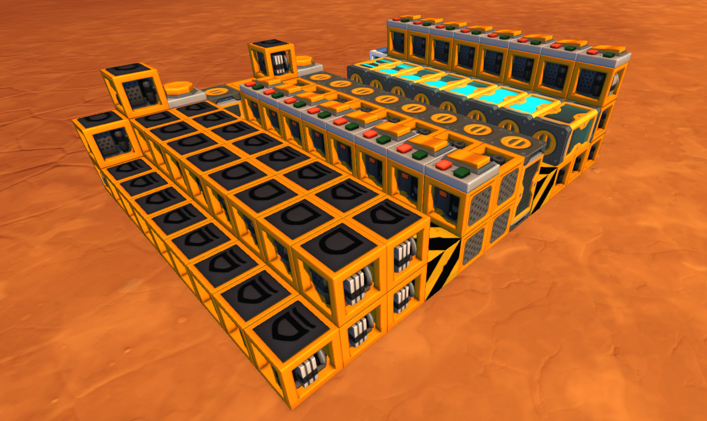

When building computers or other complex logic creations in Scrap Mechanic, one question always comes to mind: How much memory should it have? Too little memory will limit the capabilities of the computer, but having too much will lag out the game, making the computer run slower and make it inaccessible to people with lower end PC's. Most RAM builds need about 5 or 6 gates per bit for addressing and input/output management. Discord user kazpy74#6785 came up with a way to make memory with 2 gates per bit by intertwining two bits together, so really 4 gates per two bits. But in August 2020 I came up with a way to store up to 2400 bits in a single timer: Timermemory.

Scrap Mechanic timers work just like how one would expect them: You give them an input, and after the specified amount of delay you see the output. But a thing that Scram Mechanic timers do which timers in, for example, Logic World, do not, is that if you input a sequence of ones and zeros, you get that same sequence back. The trick of Timermemory is that we take that output sequence, and loop it back to the input of the timer. Now, that sequence of binary data keeps looping through the timer, effectively storing an almost unlimited amount of data in a single block.
Of course, some extra logic is required to manage the data. And here is the big (but only) disadvantage: You need to wait for the correct data to come out of the timer, and this is a long and random amount of time. And once the data is in the right part of the loop, there is only a single tick where you can read or write, so the timing has to be very precise.
So the first step of making this timer memory is to make a really fast counter. It needs to increment every single tick, so that its output always represents the address that is coming out of the timers at that moment. The amount of bits that the timer has determines the amount of bits stored in each timermemory cell. For example, an 8 bit timer is for 256 bits of timermemory. The counter being built here is not really the best, but it will do the job. It is a ripple counter, and it uses more timers to counteract the delay of the ripple. Nowadays, I know how to make instant counters, but this will do the job just fine.
The next step is to make the timer loops. The main loop consists of one timer, an and gate and an or gate. The and gate takes the data from the timer and a second input that is usually turned on. To write data to the timer memory, the current value needs to be erased first. This is done by turning off that second input for one tick at the exact moment the data is coming through. This will reset the data, allowing the following or gate to write data back to it. Then, that or gate feeds back into the timer where the data is stored. The amount of delay that the timer should be set to is the amount of bits you want to store, minus 3. That is because the three connections that are also part of the loop have some delay too, which needs to be compensated.
The last step is making some temporary memory to make it easier for other components to send and receive data from the timer memory, without having to deal with the exact timings. In these last two episodes we hook up the memory to the input and output of the timer memory and make sure all the timing works. After this, the system works and data can be stored and retrieved easily.